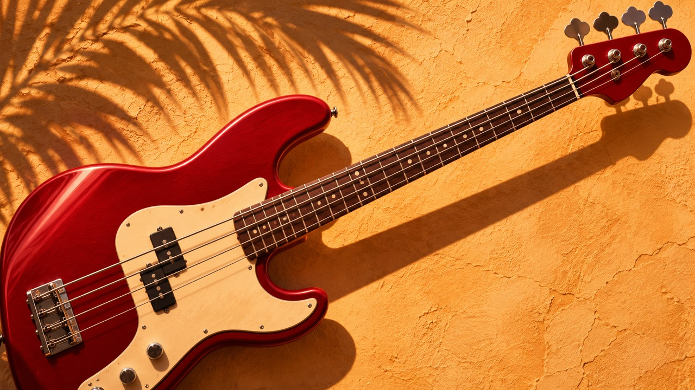

z5001
West Coast Funk Bass Hooks Opening
Original west coast funk bass hooks ideas with coordinated melodic and harmonic parts. Initial cell establishes the material.
Open combined MIDIOriginal symbolic composition · four study release
Original west coast funk bass hooks ideas with coordinated melodic and harmonic parts. Four original 88 BPM scores built for inspection, arrangement and adaptation.

Composer's frame
A composed rhythmic cell develops through introduction, statement, contrast and return.
Editable synth-oriented MIDI parts, low bass and mapped programmed drums.
Original symbolic studies; genre labels are production directions, not cultural authority.
Preview film
Illustrated excerpt from the first MIDI study. Preview, not master. Artwork is an illustration.
The four studies
z5001
Original west coast funk bass hooks ideas with coordinated melodic and harmonic parts. Initial cell establishes the material.
Open combined MIDIz5002
Original west coast funk bass hooks ideas with coordinated melodic and harmonic parts. Statement introduces a different contour.
Open combined MIDIz5003
Original west coast funk bass hooks ideas with coordinated melodic and harmonic parts. Contrast moves the accent map.
Open combined MIDIz5004
Original west coast funk bass hooks ideas with coordinated melodic and harmonic parts. Return keeps the identity while changing one placement.
Open combined MIDICanonical listening file
Generated from the first combined MIDI with the committed simple synthesizer. It was not auditioned and makes no finished-production claim.
Playback roles
Five musical roles are mapped to user-facing channels 1–5; drums use user-facing channel 10. Bass and principal melody are monophonic. No playback programs, controllers, pitch bends, keyswitches or SysEx are encoded.
Evidence shelf
Use note
Use the combined arrangement or its six separate role files. Do not stack both together.
Review boundary
Automated checks validate exported-file integrity, not groove, cultural framing, commercial suitability, physical playability or copyright clearance. The duplicate-motif review is bounded structural analysis, not exhaustive clearance.
Draft promotional text is present in the repository only. Nothing is posted externally.
16 four-bar clips are included in the download. Browse the clip index · Clip validation
Use of this pack’s MIDI is governed by the MIDI Buyer License v1.0, included in the download.